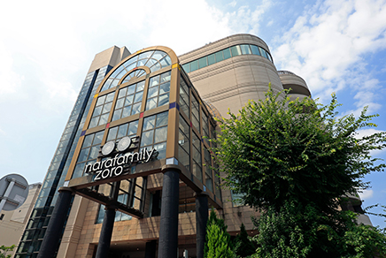
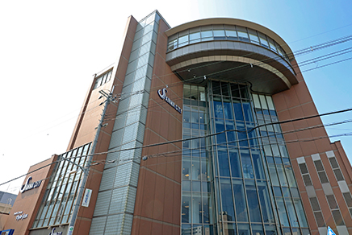
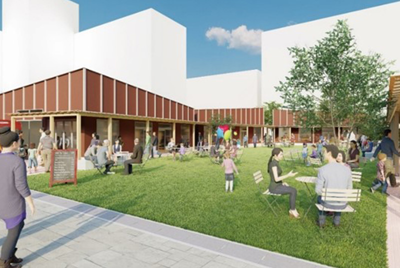
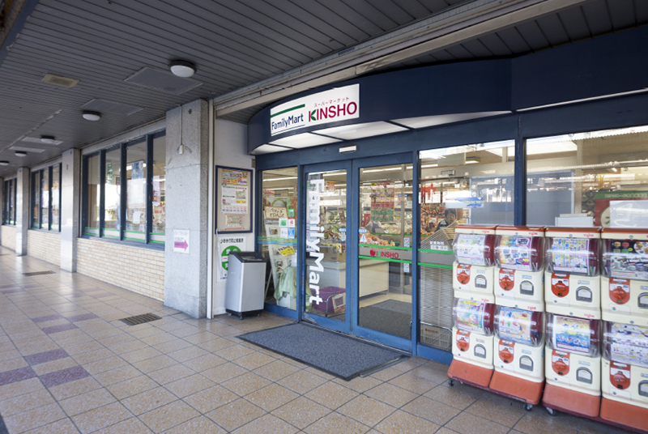
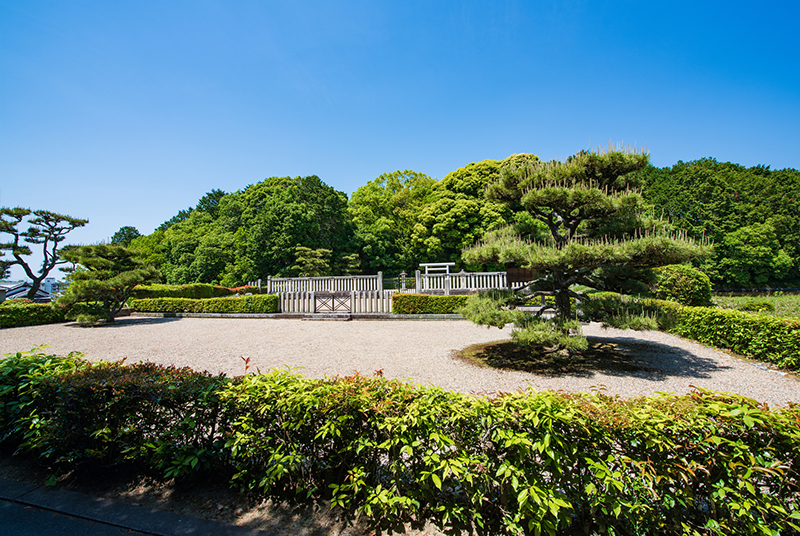
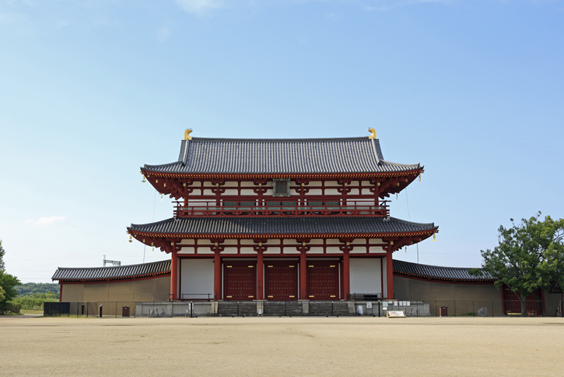
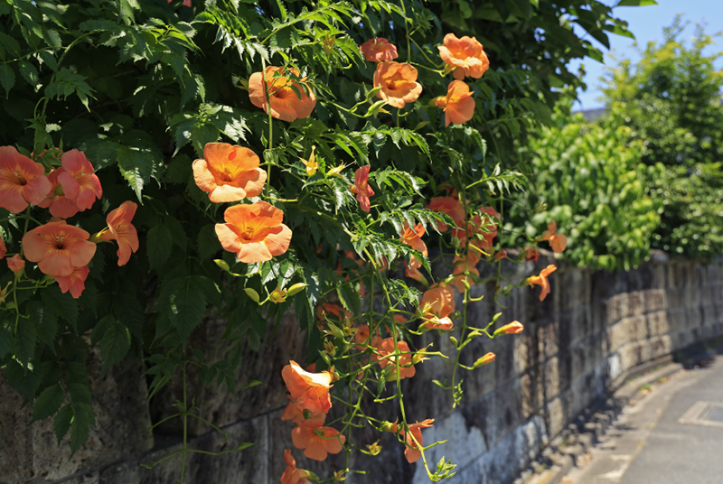
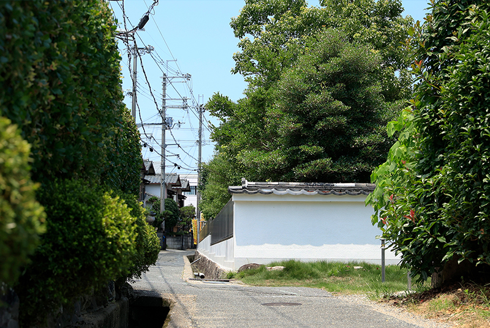
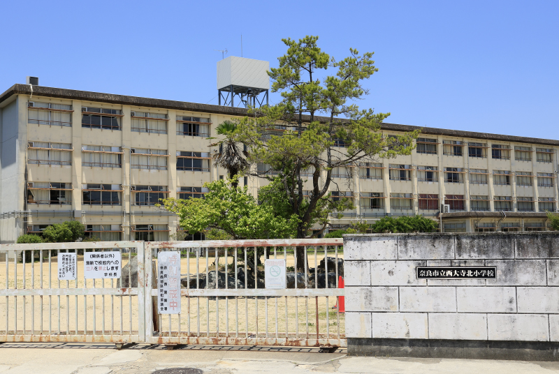
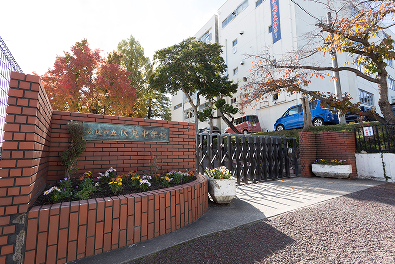

関電不動産開発がお届けする、新築分譲マンション「シエリア西大寺」の公式サイトです。近鉄「大和西大寺」駅徒歩7分、「大阪難波」駅・「京都」駅へ直結。奈良史上初、先進のZEH-M・低炭素建築物認定レジデンス。総61邸
西大寺(徒歩8分／約610m）
ロケーション
豊かな歴史と文化、都市機能を享受しながら、
落ち着いた西大寺キタマチで暮らす。
駅周辺にはショッピングエリアを中心に古墳が点在する歴史・文化エリア、西大寺エリアなどが広がり、
現地一帯は低層建物中心の邸宅街エリアで、閑静な暮らし心地が魅力です。
近鉄「大和西大寺」駅の改札内にある、
便利な駅ナカ・ショッピングモール「タイムズプレイス」。
「スイーツ」「総菜」「奈良」をコンセプトにした駅ナカ・ショッピングモール「Time’s Place 西大寺」。
県内初のスーパー「成城石井」、ドラッグストア「コクミン」などが入店しています。
近鉄「大和西大寺」駅前には、
大型商業施設や便利なスーパーなどが集積。
駅前にある人気の複合商業施設「ならファミリー」やショッピングモール「サンワシティ西大寺」をはじめ、
ショッピングモールやコンビニエンスストアなど多彩なショッピング施設が利用できます。
また2023年春には、「Coconimo Saidaiji」が開業し、ますます便利に。
-
 ならファミリー近鉄イオン（徒歩10分／約750m） -
 サンワシティ西大寺（徒歩9分／約650m） -
 Coconimo Saidaiji（徒歩8分／約609m） 出典：近鉄不動産株式会社 -
 KINSHO（徒歩9分／約750m）
悠久の時代から人の暮らしが息づき、
「平城京」で栄華を極めた奈良の中心地が舞台。
「佐紀（さき）石塚山古墳」は、奈良市が定めた「歴史の道」沿いにある3基の巨大古墳。
「平城宮跡歴史公園」には奈良時代の遺跡が保存・復元されており、世界遺産にも登録されています。
-
 佐紀石塚山古墳（徒歩15分／約1,170m） -
 平城宮跡（徒歩18分／約1,410m）
「法隆寺」や「東大寺」と並び、
南都七大寺に数えられる「西大寺」も近くに。
南都（平城京一帯）七大寺の一つで駅名にも冠された、この地の象徴でもある「西大寺」。
現在残っている本堂、愛染堂、四王堂などは江戸時代中期に再建されたものです。
駅前の賑わいを感じながら、
穏やかな日常が満喫できる西大寺北町アドレス。
駅北口から線路沿いに北西へ歩き踏切を渡ると、そこは閑静な西大寺北町1丁目界隈。
中心街とは一線を画した古き佳き街並みが穏やかな表情で迎えてくれます。
-
 現地周辺image -
 現地周辺image
暮らしに必要となる各種金融機関、医療機関、
教育機関なども徒歩圏に。
地元密着型の「南都銀行」などの金融機関、「やまね内科クリニック」などの医療機関が徒歩圏に。
「市立西大寺北小学校」及び「市立伏見中学校」などの教育機関も整っています。
-
 市立西大寺北小学校（徒歩8分／約620m） -
 市立伏見中学校（徒歩8分／約600m）
ライフインフォメーション
暮らしを心地よくサポートする、
多彩な生活施設が整ったロケーション。
- 買物施設
- 公共・生活施設
- 塾・教育施設
- 医療施設
- 公園・スポーツ
- グルメ・その他
※掲載のビジュアルは、空撮写真にCG処理を施したもので、実際とは異なります。
※掲載の完成予想CGは計画中の図面を基に描き起こした完成予想図で施工上の都合または行政官庁の指導改良などにより仕上、形状、植栽、色彩等を変更する場合があり実際とは多少異なります。尚、植栽は特定の季節や竣工時の状態を描いたものではありません。また電柱および周辺の建物等は省略しております。予めご了承ください。室外機、雨水枡、各種配管等は表現しておりません。
※徒歩分数は80mを1分として算出しています。
※掲載の所要時間は通勤時（7：30～9 ：00到着）の乗換・待ち時間等を含む最短所要時間を表したもので、時間帯により異なります。
※2022年6月現在のダイヤによるものです。ヴァル研究所「駅すぱぁと（2022/06 第3版）」調べ
※掲載の情報は2022年7月時点のものであり、今後変更になる場合があります。
※掲載の完成予想CGは計画中の図面を基に描き起こした完成予想図で施工上の都合または行政官庁の指導改良などにより仕上、形状、植栽、色彩等を変更する場合があり実際とは多少異なります。尚、植栽は特定の季節や竣工時の状態を描いたものではありません。また電柱および周辺の建物等は省略しております。予めご了承ください。室外機、雨水枡、各種配管等は表現しておりません。
※徒歩分数は80mを1分として算出しています。
※掲載の所要時間は通勤時（7：30～9 ：00到着）の乗換・待ち時間等を含む最短所要時間を表したもので、時間帯により異なります。
※2022年6月現在のダイヤによるものです。ヴァル研究所「駅すぱぁと（2022/06 第3版）」調べ
※掲載の情報は2022年7月時点のものであり、今後変更になる場合があります。